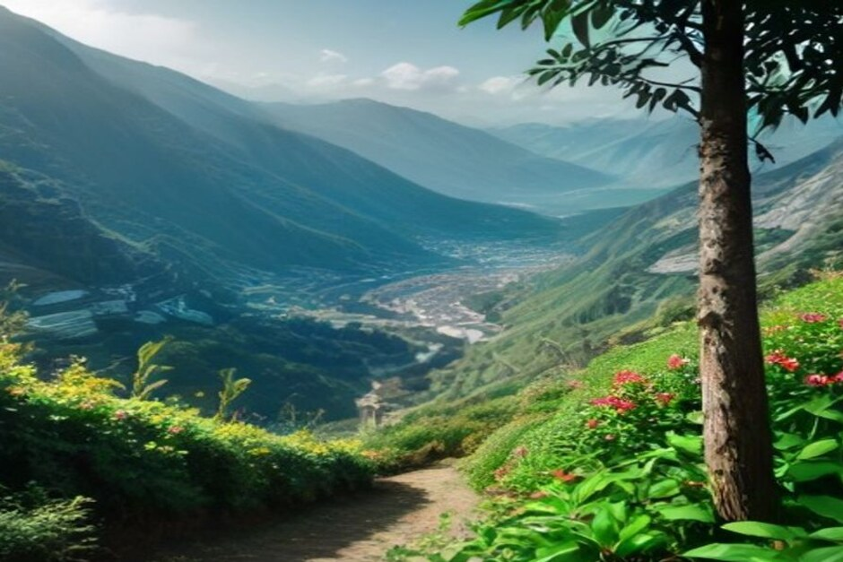
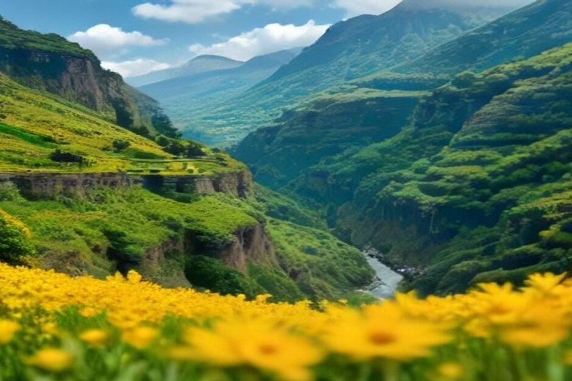

Vous avez repéré le « Madeira Nature Festival 2026 » (ou « Festival da Natureza », selon la langue du site) et vous vous demandez ce que c'est, quand ça se passe et s'il faut réserver ? Voici l'essentiel : six jours d'activités de plein air, du 6 au 11 octobre 2026, répartis sur toute l'île, et quelques conseils pour en profiter sans vous perdre dans le programme.
Les dates du Madeira Nature Festival 2026
L'édition 2026 s'est tenue du 6 au 11 octobre. Le festival revient chaque année en octobre : si vous lisez ces lignes après coup, retenez simplement la période pour préparer la prochaine édition, et surveillez le calendrier officiel des événements de Visit Madeira, où le rendez-vous est annoncé avec les autres fixtures de l'automne.
Le programme détaillé, site par site, se précise généralement à l'approche de l'événement. C'est donc ce calendrier officiel qui fait foi, pas un article de blog, le nôtre compris.
Un festival, mais pas de grand site unique
Si vous imaginez une grande scène avec une entrée et des files d'attente, oubliez. Le Nature Festival est un programme décentralisé : des activités guidées proposées par des opérateurs agréés, à des endroits différents de l'archipel. Il s'adresse autant aux habitants qu'aux visiteurs.
L'idée ressemble à celle d'un festival gastronomique, mais pour le patrimoine naturel : tout est concentré sur une semaine, avec un programme à suivre au lieu de chercher les prestataires un par un.

Quelles activités au programme ?
Le noyau dur, ce sont les activités qui font la réputation de l'intérieur de Madère :
- les randonnées guidées ;
- le canyoning ;
- le VTT ;
- le trail.
En 2026, les organisateurs ont ajouté un volet bien-être. Ils cherchent aussi à marier le tourisme actif avec la gastronomie, l'œnotourisme et la musique live. Concrètement, une matinée de canyoning peut se retrouver dans la même journée qu'une dégustation ou un concert, à proximité.
Pour qui hésite sur le niveau : renseignez-vous directement auprès de l'opérateur de chaque activité, c'est lui qui vous dira ce qui convient.
Gratuit ou payant, et faut-il réserver ?
Cela dépend de ce que vous visez.
Certaines conférences, démonstrations et présentations sont accessibles gratuitement au public. En revanche, les activités guidées (randonnées, canyoning, VTT), qui forment l'essentiel du programme, passent par des opérateurs agréés. Elles se réservent et se paient individuellement, exactement comme en dehors de la semaine du festival.
Les places sont limitées. Notre conseil : dès que le programme détaillé est publié, réservez auprès de l'opérateur indiqué ou via le calendrier de Visit Madeira, plutôt que de compter sur le jour même. Et n'empilez pas trop d'activités : une ou deux sorties solides par jour, c'est déjà beaucoup avec le dénivelé madérien.
Où se déroule le festival à Madère ?
Un peu partout. Chaque municipalité accueille sa part du programme au fil de la semaine. C'est voulu : cela emmène les visiteurs vers des paroisses et des départs de sentiers qu'ils auraient sans doute ignorés au profit des quelques points de vue célèbres.
Pour vous organiser, le plus simple est de choisir une base, par exemple Funchal, et de regarder quelles activités sont accessibles en voiture depuis là. Vérifiez le point de rendez-vous de chaque sortie avant de réserver votre hébergement.

Octobre à Madère : une bonne période ?
Pour combiner terre et mer, c'est l'un des meilleurs mois. L'Atlantique garde encore la chaleur de l'été et la foule de la haute saison s'est calmée sur les sentiers principaux. En montagne, le temps est en général assez stable pour enchaîner des randonnées, avant les pluies qui peuvent s'installer vers décembre.
Rien n'est garanti pour autant : la météo de montagne change vite à Madère, et un plan B ne fait jamais de mal. Sur la côte, la baignade et les sorties en bateau restent d'actualité.
Une journée de festival, une sortie en bateau depuis Funchal
Tout le programme du festival se déroule sur terre. La mer reste donc libre, et c'est une bonne façon de couper une semaine de marche ou de canyoning.
Chifbay propose des sorties en bateau privé depuis la Marina do Funchal, ponton C, tout au long du mois d'octobre. Le bateau est pour votre groupe seul, jusqu'à 5 personnes, avec deux skippers de Madère. Les prix valent pour tout le bateau, jamais par personne.
- La sortie à la journée part à 10 h ou à 14 h. Comptez 2 h 30 jusqu'à Ribeira Brava (500 EUR), ou 3 h en poussant jusqu'à Ponta do Sol (600 EUR). Au programme : Câmara de Lobos, Cabo Girão, une baignade et des paddles à la Fajã dos Padres. Détails sur la page sortie à la journée.
- La sortie coucher de soleil part 1 h 15 avant le coucher du soleil, toute l'année. Deux heures jusqu'à Cabo Girão (400 EUR), ou 2 h 30 jusqu'à Ribeira Brava (500 EUR). Il n'y a pas d'arrêt baignade.
Boissons et repas sont à bord. Chaque sortie comprend aussi une vidéo 360° Insta360, des images de drone si la météo le permet et des photos prises avec un vrai appareil. L'annulation est gratuite jusqu'à 24 heures avant le départ, ce qui est pratique si la météo ou votre programme de festival change. Pour comparer les formules, voyez nos meilleures excursions en bateau à Madère et nos expériences.
Le festival vous montre la nature de Madère de l'intérieur. Le bateau vous montre la même île de l'extérieur, en regardant vers elle.
Notre conseil pour bien organiser votre semaine
- Consultez le calendrier officiel de Visit Madeira dès que le programme est publié.
- Réservez d'abord les activités guidées, puis calez la sortie en mer sur un jour plus calme.
- Si vous venez de France, de Belgique ou de Suisse, gardez une marge dans votre planning : les sessions les plus prisées partent en premier.
- Pour les questions pratiques (rendez-vous, accès), la page infos pratiques répond à l'essentiel, et vous pouvez lire les avis de nos passagers avant de choisir.
Retrouvez d'autres idées dans notre journal.